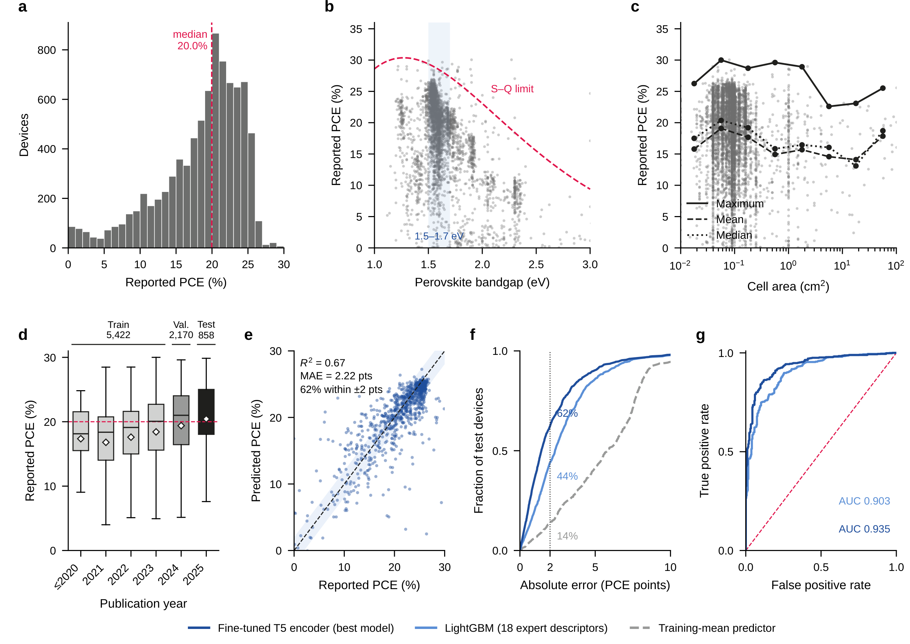

A perovskite solar cell paper may report several devices. Its best efficiency, fabrication parameters, and stability results may appear in different sections, tables, or supplementary files. Even when all the numbers are copied correctly, attaching a control device's process to the champion cell creates an experimental record that never existed. VerifiedLab first checks literature records field by field, then lets research agents compute evidence from those records and assess which claims the evidence supports.
This reading covers Yu Yao, Jiayi Dong, and colleagues' VerifiedLab: Harnessing Knowns for Unknowns, based on the arXiv v1 preprint submitted on October 27, 2026.
1. Topic: making experimental literature reusable
Materials researchers often need to bring observations from different labs into one table and compare how composition, device structure, or processing relates to performance. A reusable record has to identify the sample, the step or condition under which a value was measured, and where it can be checked in the source.
The power conversion efficiency (PCE) of a perovskite solar cell measures how much incident light power becomes electrical power. An efficiency value becomes comparable when it is tied to a device structure, measurement conditions, and a reporting convention. Stability depends especially on context. The same retained efficiency is hard to interpret without the test duration, humidity, and illumination. A research agent must extract the results and determine what analyses those results can support.
2. Related work: from sharing data to deciding how to use it
| Work | What it established | Connection to this paper |
|---|---|---|
| FAIR Guiding Principles | Data should be findable, accessible, interoperable, and reusable | A program can find and trace records, while the accuracy of individual fields still needs to be assessed |
| Perovskite Database Project | Curated published perovskite device data by hand and released a database and analysis tools | Supplies some expert reference records and demonstrates cross-paper analysis with structured fields |
| LLM4Mat-Bench | Compared general and specialized models on materials property prediction | Motivates testing whether recipes extracted from papers support efficiency prediction on a held-out year |
VerifiedLab connects two steps. It measures the reliability of automated extraction and verification, then uses the resulting records to recover known patterns and predict the performance of devices published in a later year.
3. Research questions: from accurate extraction to downstream use
We read the paper as addressing three questions.
- Can the system link a single device's materials, processing, and measurements in one record? The analysis needs to identify where models confuse samples, process steps, or measurement conditions.
- Can explicit rules bring automated verification closer to expert judgment? Compare the same field pairs with and without the rules, and distinguish direct agreement with experts from agreement with an audited model.
- Can the records support downstream research? Test recovery of known trends and prediction on a later year, and examine how the workflow limits claims when the evidence is unreliable.
4. Method: build the records, then restrict how evidence is used
Step 1. Select a device consistently and fill 97 fields
The generator reads the paper and its supplement. Under an expert-authored annotation Skill, it selects the champion device by explicitly reported scan PCE. Its 97 fields span seven categories: reference data, cell definition, device stack, materials synthesis, fabrication, J–V metrics, and stability. The rules require mapping sample identifiers across the paper and supplement and keeping layer order and units. Values that are unreported, ambiguously assigned, or inferable only are recorded as Null. This provides a consistent unit for comparison and introduces a selection effect from using one winning device per paper. Methods
Step 2. Verify each field with domain rules
In evaluations with expert reference values, the verifier receives the field definition, candidate value, reference value, and rule. It distinguishes scientific equivalence, two empty values, an omission, an unsupported entry, and a mismatch. Compatible units and chemical aliases can be accepted, while reversing layer order or borrowing a value from another device changes the result. The harness checks record structure and returned labels and saves the source document, model versions, Skill versions, and decision provenance. The two Skills govern how to fill records and judge equivalence, respectively. Expert audits inform revisions to the rules.
Step 3. Release the provenance and reliability of field categories
The authors ran extraction on 10,258 experimental papers published from 2021 to April 2025. GPT-5-mini generated the records, and GPT-5-mini and o3 checked them separately. The released data carry source DOIs and category-level reliability scores. These scores come from automated checks and describe the performance of entire field categories. They do not estimate a specific value's probability of being correct. Stability was the weakest category and was excluded from both downstream analyses. Methods and data
Step 4. Compute evidence and review the claims it supports
In the authors' design walkthrough, a PI plans the study, a librarian computes statistics from the records, specialists draft claims, and a forecaster estimates the PCE of candidate recipes. A reliability gate restricts the usable field categories, then a critic checks each claim against the evidence. Efficiency evidence may support a performance trend while leaving a proposed stability improvement unsupported, so the critic removes that clause. The dialogue and meetings in original Fig. 6 are illustrative, with numbers computed from the database and forecaster. They explain the workflow. Empirical results come from the downstream backtest and field evaluations. Fig. 6 and demonstration setup
5. Experiments and results: what downstream analyses can the data support?
Main evaluation: recover known trends and predict devices published a year later
The authors first checked whether the database recovers familiar performance patterns. In Fig. 5, high-efficiency devices cluster in a narrow bandgap range, below the Shockley–Queisser limit. Larger devices show lower and more dispersed efficiencies. Each plot uses records with parseable values for the relevant fields. The patterns support aggregate analysis of published champion devices. Relationships among area, architecture, and efficiency remain observational.

The temporal benchmark provides a more direct test. The authors retained 8,450 records with a year and reverse-scan PCE above 0 and at most 30%. They used 5,422 records through 2023 for training, 2,170 from 2024 for validation, and 858 from 2025 for testing. Predictors saw 71 recipe fields. Removing J–V, stability, and bibliographic information reduced the risk that another efficiency measure or a title would reveal the target. The share exceeding 20% PCE rose from 43.5% in training to 65.5% in testing, so the split includes a distribution shift. Targets are the measured values reported in the papers.
| Selected comparisons | MAE (PCE percentage points, ↓) | R² (↑) | ROC AUC for PCE > 20% (↑) |
|---|---|---|---|
| Constant training-set mean | 5.69 | −0.22 | 0.500 |
| LightGBM, 18 expert descriptors | 2.87 ± 0.01 | 0.60 ± 0.00 | 0.904 ± 0.001 |
| LightGBM, all recipe fields | 2.48 ± 0.01 | 0.69 ± 0.00 | 0.930 ± 0.001 |
| Fine-tuned MatSciBERT | 2.24 ± 0.09 | 0.71 ± 0.03 | 0.935 ± 0.002 |
| Fine-tuned T5-base encoder | 2.20 ± 0.06 | 0.68 ± 0.02 | 0.934 ± 0.002 |
| Zero-shot Llama-3.1-8B-Instruct | 4.10 | −0.02 | 0.642 |
| Retrieval-based five-shot Llama-3.1-8B-Instruct | 2.82 | 0.50 | 0.867 |
Source: Fig. 5h and temporal prediction protocol. Values with ± show the mean and standard deviation across three seeds.
Using all recipe fields reduced the mean error of the same LightGBM model from 2.87 to 2.48 percentage points, showing that the more detailed records carry additional predictive information. T5 had the lowest mean absolute error, and MatSciBERT had higher R² and AUC than T5. The comparison tests predictions on historically held-out devices. The experiment leaves open how much verification itself contributes, since the same predictor was not tested under matched conditions on verified and unverified records.
Mechanism: which extraction and verification errors do the rules help?
The extraction benchmark used 100 papers × 97 fields. The authors compared 18 generators with and without the annotation Skill, holding documents, schema, and verifier fixed, for 9,700 field decisions per condition. An all-empty record scored 36.4% accuracy because many fields were unreported. Rules raised every generator's overall accuracy, but values that need to be linked across sections remained difficult. A model might, for example, assign a processing atmosphere to the wrong step. The audited o3 verifier supplied the scores. Fig. 3 and Methods

Verification was evaluated in two ways. The direct expert comparison in Fig. 4a covered 1,940 decisions in Collection A and 1,460 in Collection B. With the verification Skill, o3 agreement rose from 96.0% to 99.5% in A and from 95.1% to 99.7% in B. Ten open-weight models were separately evaluated against audited o3 on 9,700 fields. The rules mostly corrected false rejections caused by aliases, units, and notation. They helped less when a model was already too willing to accept incorrect values. These agreement rates measure decisions about candidate and reference values. Estimating extraction accuracy across the entire corpus is a separate measurement.
6. Our reflections
Topic: what is this area studying?
Research agents need to inherit experimental facts together with their conditions. Keeping the sample, process step, source location, and verification rule lets a researcher or agent trace the evidence behind a claim. We see the most interesting design choice here as applying that judgment before releasing a claim, where it can change the result.
Limitations: what remains unresolved?
- Category averages can hide individual errors. Two automated verifiers can miss the same sample mismatch, and one shares the generator's model family. High agreement on the expert comparison does not establish the accuracy of all deployed records.
- Training and testing are restricted by what gets published. The dataset keeps one champion device per paper, and the 2025 test covers held-out devices in published papers. Errors on unsuccessful recipes, unfamiliar processes, and later years remain unknown.
- The gate and critic lack a separate evaluation. The paper illustrates when they would remove an unsupported claim. It does not compare claim quality and the cost of withholding claims on the same tasks with and without the gate.
Possible approaches: how could these limits be tested?
- Audit records based on error risk. Sample stability, layer order, and cross-device fields for expert review. Record where a value was misassigned and report error rates by type alongside the rate of unverifiable entries.
- Preregister prospective validation. Fix a training cutoff, include controls and unsuccessful runs, and lock the model and error metrics for the candidate recipes before independent experiments.
- Compare the gate on matched tasks. Hold the database, models, and budget fixed, then use blinded expert review to measure the share of released claims with sufficient evidence and the number of supported claims the gate withholds.
Sources: original v1 PDF, official code, and public data. Original Figs. 2, 4, and 5a–g by Yu Yao et al. are rasterized without redrawing under CC BY 4.0. Fig. 2 uses icons from Heroicons (MIT) and Font Awesome Free (CC BY 4.0).